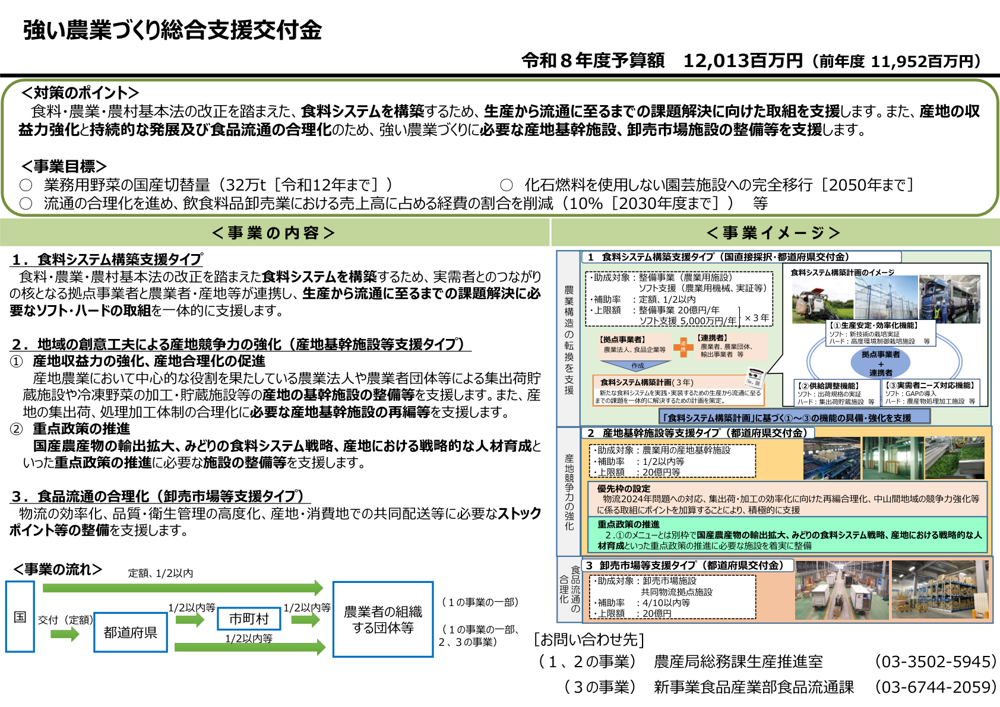
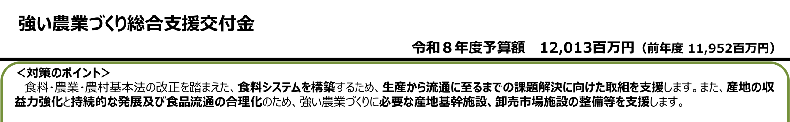
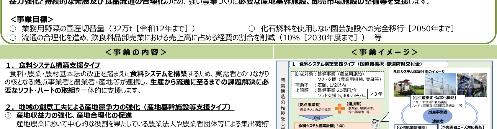
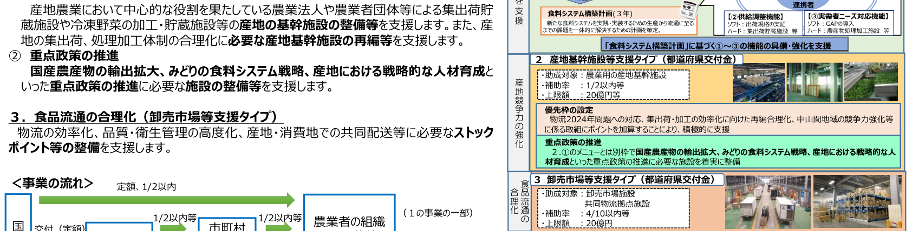
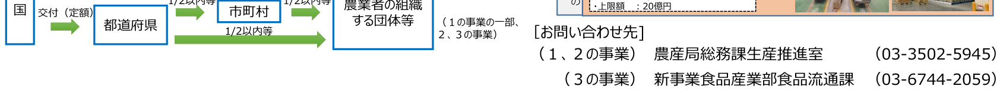

強い農業づくり総合支援交付金を読み解く 令和8年度概算時点の目標・交付経路・補助条件
確認時点：令和8年度予算概算説明資料（農林水産省、資料番号260407-22 相当の概要シート）に基づく整理です。
農林水産省「強い農業づくり総合支援交付金」の令和8年度予算概算説明資料に基づき、政策目標、事業の流れ、支援タイプ別の助成対象・補助率・上限額をまとめたものです。農業法人・産地団体・流通関係者など、制度の位置づけを押さえたい農業関係者向けの整理です。公募要領・申請期限・細目は農林水産省および都道府県の一次情報に従ってご確認ください。
食料・農業・農村基本法の改正を踏まえた食料システムの構築、産地の収益力強化と持続的発展、食品流通の合理化を柱に、生産から流通までの投資とソフト施策が一体で支援される制度です。交付金の中身は大きく分けて性質の異なるメニューが並ぶため、まず全体の骨組みを押さえてから自事業の当てはめを検討するのがおすすめです。
要点をひと目で

全体像は上図のとおりです。以下の表は、制度記事で軸にしている「誰が・何を・いつまでに・いくら」を、この概要シートの範囲で要約したものです。
| 項目 | 内容 |
|---|---|
| 誰が | 農業者の組織する団体、農業法人、拠点事業者と連携する事業者、卸売市場・共同物流拠点の整備主体などが想定されます。採択・交付の経路は支援タイプによって国直接か都道府県経由かが分かれます。 |
| 何を | 食料システム構築計画に沿ったソフト・ハード、産地基幹施設等支援タイプにおける産地基幹施設の整備・再編、卸売市場等支援タイプにおける卸売市場施設・共同物流拠点施設・ストックポイント等が対象として示されています。 |
| いつまでに | 個別の申請締切はこの概要では示されていません。政策目標として、業務用野菜の国産切替量32万t（令和12年まで）、化石燃料を使用しない園芸施設への完全移行（2050年まで）、飲食料品卸売業の売上高に占める経費割合の削減（2030年度までに10％）などが掲げられています。 |
| いくら | 令和8年度予算額は12,013百万円です（前年度11,952百万円）。タイプにより整備事業で年20億円上限、ソフト支援で年5,000万円上限、卸売市場等で年20億円上限などが示されています。 |
支援は「食料システム構築」「産地基幹施設等」「卸売市場等」に大別されます。自事業が流通のどこに効くかを先に決めると、見るべき補助率・上限額の欄がすぐに絞れます。
国が掲げる目標と、支援が向かう課題

食料システムの構築に向けて、生産から流通に至る課題への対応が支援の出発点に置かれています。あわせて産地の収益力強化・持続的発展、食品流通の合理化が明記されており、単一の施設整備にとどまらない政策設計であることが分かります。
事業目標には、業務用野菜の国産切替、園芸における化石燃料非依存への移行、卸売段階の経費率改善など、中長期の指標が並んでいます。個別事業の採択判断と直結する数値ではありませんが、制度の優先度や説明資料での位置づけを読み解く手がかりになります。
国から都道府県、市町村、現場団体へと至る交付の流れ

交付は国から都道府県、さらに市町村を経由して農業者の組織する団体等に至る流れが示されています。食料システム構築支援タイプの一部は国直接採択と都道府県交付金の両方があり、産地基幹施設等および卸売市場等は都道府県交付金として整理されています。
同じ交付金でも、助成対象・補助率・上限額がタイプごとに異なります。たとえば卸売市場等支援タイプは4/10以内等、産地基幹施設等は1/2以内等といった違いがあります。「交付金名は同じだから条件も同じ」と考えると後から齟齬が出やすいので、タイプ確定後に条件表をあらためて確認してください。
食料システム構築で強化される機能のイメージ

食料システム構築計画は、新たな食料システムを実践するために、生産から流通までの課題を一体的に解く計画として位置づけられ、おおむね3年を単位に組み立てるイメージが示されています。
拠点事業者が核となり、農業法人・食品企業・農業者団体・輸出事業者などの連携者と組み、①生産の安定・効率化、②供給調整、③実需者ニーズ対応の各機能をソフトとハードの両面から進める構図です。栽培実証や環境制御型施設、出荷規格の実証、集出荷貯蔵、GAP導入、処理加工施設などが例示されています。
タイプ別に見る助成対象と条件の早見
概要シート上の区分に沿って、条件の骨格だけを表にまとめ直しました。細目は公募要領で上書きされることがあるため、申請時は必ず最新版を確認してください。
| 支援の区分 | 主な助成対象 | 補助率 | 上限額（概要の記載） |
|---|---|---|---|
| 食料システム構築支援タイプ | 整備事業（農業用施設）、ソフト支援（農業用機械、実証等） | 定額、1/2以内等 | 整備事業20億円/年、ソフト支援5,000万円/年 |
| 産地基幹施設等支援タイプ | 農業用の産地基幹施設（集出荷・冷凍野菜の加工・貯蔵等） | 1/2以内等 | 20億円等 |
| 卸売市場等支援タイプ | 卸売市場施設、共同物流拠点施設 | 4/10以内等 | 20億円 |
産地基幹施設等については、通常の産地強化メニューに加え、国産農産物の輸出拡大、みどりの食料システム戦略、産地における戦略的人材育成に資する施設を別枠で整備しやすくする旨が示されています。
加点が想定される政策テーマ
物流2024年問題への対応、集出荷・加工の効率化に向けた再編合理化、中山間地域の競争力強化などに係る取組には、ポイント加算により積極的に支援しやすい枠組みであることが示されています。実際の配点や要件は、公募段階の要領で具体化されます。
令和8年度の予算規模の記載

令和8年度予算額は12,013百万円、前年度は11,952百万円と記載されています。微増にとどまる一方で、政策目標の幅は広く、複数セクターにまたがる投資ニーズを束ねる性格の交付金であることがうかがえます。
制度の全体像をつかんだあとに見るとよい論点
次の順に確認すると、制度の地図が頭の中でつながりやすくなります。
- 自事業が食料システム構築・産地基幹・卸売市場等のどの文脈に最も近いか
- 必要な計画（食料システム構築計画の要否など）と、国直接か都道府県経由か
- 適用される補助率・上限額の欄
- 優先テーマや加点の方向性と、自事業の説明がどう接続するか
- 最新の公募要領・様式・問い合わせ先（農林水産省および所管の都道府県）
不明点は、公募要領に記載の問い合わせ先や所管窓口で確認してください。
キーワード解説
食料システム構築計画
生産から流通までの課題を一体的に解決するための計画です。実践・実装に向けておおむね3年程度を想定した枠組みとして示されています。
産地基幹施設等支援タイプ
地域の創意工夫による産地競争力の強化を目的とし、集出荷貯蔵や冷凍野菜の加工・貯蔵など、産地で中核となる施設の整備や再編を支援するタイプです。
卸売市場等支援タイプ
食品流通の合理化を目的とし、物流効率化や品質・衛生管理の高度化、共同配送に必要なストックポイント等の整備を支援するタイプです。
ストックポイント
物流の効率化や共同配送を進めるうえで、在庫や通過貨物の集約・調整に使われる拠点機能を指す用語として、卸売市場等支援の文脈で示されています。
まとめ
強い農業づくり総合支援交付金は、食料システムの再構築、産地の基盤整備、卸売・物流の合理化を束ねる枠として整理されています。支援タイプごとに交付経路と補助条件が異なるため、タイプの見極めが最初の関門になります。
本記事は令和8年度予算概算説明に用いられる概要シートの範囲に基づいています。制度の詳細や申請要件は一次情報に従ってご確認ください。
【出典】農林水産省「強い農業づくり総合支援交付金」関連ページ・予算関係資料
https://www.maff.go.jp/j/seisan/suisin/tuyoi_nougyou/index.html
https://www.maff.go.jp/j/supply/hozyo/nousan/260127_111-1.html